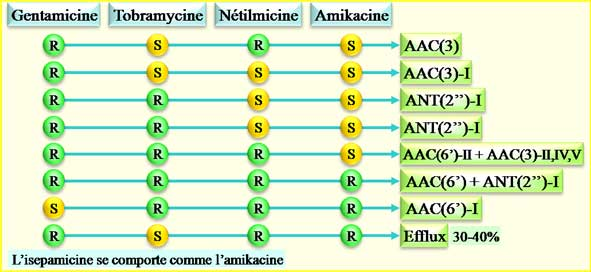

Pseudomonas aeruginosa présente
naturellement une céphalosporinase, une oxacillinase, des systèmes
d’efflux et une imperméabilité : il est donc naturellement résistant aux
aminopénicilline +/- ac. clavulanique, aux céphalosporines de 1ère et de 2ème génération, à la ceftriaxone, à la céfotaxime et à
l’ertapénème.
De nombreux mécanismes de résistance acquis peuvent
être retrouvés.
Régle
d’interprétation (CASFM 2007)
- Résistance de haut
niveau à la ticarcilline (CMI>256mg/L, disque contact) : rendre I/R la ticarcilline + ac.
clavulanique, la pipéracilline +/- tazobactam, la céfopérazone et la
cefsulodine.
- Ticarcilline + ac.
clavulanique : I/R et ticarcilline : S :
ne pas modifier la ticarcilline (induction de la céphalosporinase)
- Pipéracilline : I/R, ceftazidime : I/R et ticarcilline : S : rendre I/R la ticarcilline +/- ac.
clavulanique, la pipéracilline + tazobactam, la céfopérazone, la
cefsulodine, la cefpirome et l’aztréonam
- Ticarcilline +/- ac.
clavulanique : I/R et/ou aztréonam : I/R :
ne changer aucune catégorisation (mécanisme d’efflux)
La recherche d’une BLSE peut être réalisé par un
test de synergie (en utilisant éventuellement une gélose contenant de la
cloxacilline inhibant la céphalosporinase).

Les différents mécanismes de résistance aux aminosides ainsi que les phénotypes correspondants sont détaillés dans le tableau suivant : l’amikacine est l’aminoside le plus fréquemment actif sur le P. aeruginosa.